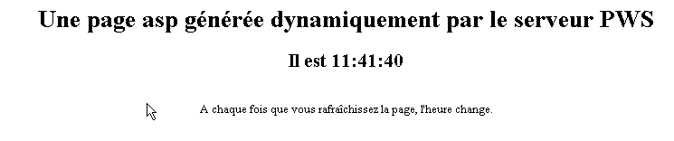
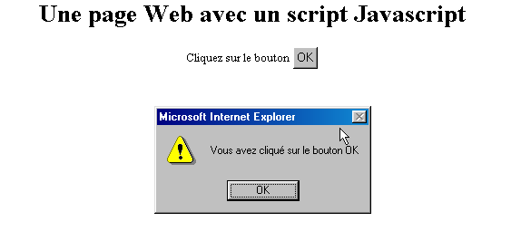
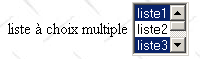

2. Le basi
In questo capitolo presentiamo le basi della programmazione web. Il suo scopo principale è quello di far scoprire i grandi principi della programmazione web, che sono indipendenti dalla tecnologia specifica utilizzata per la loro implementazione. Il capitolo presenta numerosi esempi che è consigliabile provare per «assimilare» gradualmente la filosofia dello sviluppo web. Gli strumenti gratuiti necessari per provarli sono presentati alla fine del documento nell’appendice intitolata «Gli strumenti del web».
2.1. Le componenti di un’applicazione web
Machine Serveur

15Client
Numero | Ruolo | Esempi comuni |
OS Server | Linux, Windows | |
Server Web | Apache (Linux, Windows) IIS (NT), PWS (Win9x), Cassini (Windows + piattaforma .NET) | |
Script eseguiti sul lato server. Possono essere eseguiti da moduli del server o da programmi esterni al server (CGI). | PERL (Apache, IIS, PWS) VBSCRIPT (IIS, PWS) JAVASCRIPT (IIS, PWS) PHP (Apache, IIS, PWS) JAVA (Apache, IIS, PWS) C#, VB.NET (IIS) | |
Database: può trovarsi sullo stesso computer del programma che lo utilizza oppure su un altro computer tramite Internet. | Oracle (Linux, Windows) MySQL (Linux, Windows) Postgres (Linux, Windows) Access (Windows) SQL Server (Windows) | |
OS Client | Linux, Windows | |
Browser Web | Netscape, Internet Explorer, Mozilla, Opera | |
Script eseguiti sul lato client all'interno del browser. Questi script non hanno alcun accesso ai dischi del computer client. | VBscript (IE) JavaScript (IE, Netscape) PerlScript (IE) Applet JAVA |
2.2. Scambio di dati in un'applicazione web con modulo

Client Server
Numero | Ruolo |
Il browser richiede un URL per la prima volta (http://machine/url). Non viene passato alcun parametro. | |
Il server Web gli invia la pagina Web corrispondente a questo URL. Può essere statica oppure generata dinamicamente da uno script del server (SA) che potrebbe aver utilizzato il contenuto di database (SB, SC). In questo caso, lo script rileverà che URL è stato richiesto senza il passaggio di parametri e genererà la pagina iniziale WEB. Il browser riceve la pagina e la visualizza (CA). Gli script lato browser (CB) potrebbero aver modificato la pagina iniziale inviata dal server. Successivamente, attraverso le interazioni tra l’utente (CD) e gli script (CB), la pagina web verrà modificata. In particolare, i moduli verranno compilati. | |
L’utente conferma i dati del modulo, che devono quindi essere inviati al server web. Il browser richiede nuovamente la pagina iniziale URL o un'altra, a seconda dei casi, e trasmette contemporaneamente al server i valori del modulo. A tal fine può utilizzare due metodi denominati GET e POST. Alla ricezione della richiesta del client, il server avvia lo script (SA) associato all’URL richiesto, script che rileverà i parametri e li elaborerà. | |
Il server fornisce la pagina WEB generata dal programma (SA, SB, SC). Questa fase è identica alla precedente fase 2. Gli scambi avvengono ora secondo le fasi 2 e 3. |
2.3. Notations
Di seguito, supporremo che siano stati installati alcuni strumenti e adotteremo le seguenti notazioni:
notazione | significato |
radice dell'albero di directory del server Apache | |
radice delle pagine Web fornite da Apache. È in questa radice che devono trovarsi le pagine Web. Pertanto, l'indirizzo http://localhost/page1.htm corrisponde al file <apache-DocumentRoot>\page1.htm. | |
radice dell’albero associata all’alias cgi-bin, dove è possibile inserire gli script CGI per Apache. Pertanto, l'URL http://localhost/cgi-bin/test1.pl corrisponde al file <apache-cgi-bin>\test1.pl. | |
radice delle pagine Web fornite da IIS, PWS o Cassini. È in questa directory principale che devono trovarsi le pagine Web. Pertanto, URL http://localhost/page1.htm corrisponde al file <IIS-DocumentRoot>\page1.htm. | |
radice dell’albero del linguaggio Perl. L’eseguibile perl.exe si trova in genere in <perl>\bin. | |
radice della struttura ad albero del linguaggio PHP. Il file eseguibile php.exe si trova solitamente in <php>. | |
radice della struttura ad albero di Java. I file eseguibili relativi a Java si trovano in <java>\bin. | |
radice del server Tomcat. Esempi di servlet si trovano in <tomcat>\webapps\examples\servlets ed esempi di pagine in JSP in <tomcat>\webbapps\examples\jsp |
Per ciascuno di questi strumenti, si rimanda all'appendice che fornisce indicazioni per la loro installazione.
2.4. Pagine web statiche, pagine web dinamiche
Una pagina statica è rappresentata da un file HTML. Una pagina dinamica, invece, viene generata “al volo” dal server web. In questo paragrafo proponiamo diversi test con vari server web e diversi linguaggi di programmazione per dimostrare l’universalità del concetto web. Utilizzeremo due server web denominati Apache e IIS. Sebbene IIS sia un prodotto commerciale, è tuttavia disponibile in due versioni più limitate ma gratuite:
- PWS per i computer con sistema operativo Win9x
- Cassini per i sistemi Windows 200 e XP
La cartella <IIS-DocumentRoot> è solitamente la cartella [lecteur:\inetpub\wwwroot], dove [lecteur] è il disco (C, D, ...) su cui è stato installato IIS. Lo stesso vale per PWS. Per Cassini, la cartella <IIS-DocumentRoot> dipende dal modo in cui è stato avviato il server. Nell’appendice viene mostrato che il server Cassini può essere avviato in una finestra DOS (o tramite un collegamento) nel modo seguente:
L'applicazione [WebServer], nota anche come server web Cassini, accetta tre parametri:
- /port: numero di porta del servizio web. Può essere qualsiasi valore. Il valore predefinito è 80
- /path: percorso fisico di una cartella sul disco
- /vpath: cartella virtuale associata alla cartella fisica precedente. Si presti attenzione al fatto che la sintassi non è /path=percorso ma /vpath:percorso, contrariamente a quanto indicato nel pannello di aiuto sopra riportato.
Se Cassini viene avviato nel modo seguente:
allora la cartella P è la radice dell’albero web del server Cassini. È quindi questa cartella che viene indicata da <IIS-DocumentRoot>. Pertanto, nell’esempio seguente:
il server Cassini funzionerà sulla porta 80 e la radice della sua struttura <IIS-DocumentRoot> è la cartella [d:\data\devel\webmatrix]. Le pagine web da testare dovranno trovarsi sotto questa radice.
Di seguito, ogni applicazione web sarà rappresentata da un unico file che potrà essere creato con qualsiasi file di testo. Non è richiesto alcun IDE.
2.4.1. Pagina statica HTML (HyperText Markup Language)
Consideriamo il seguente codice HTML:
<html>
<head>
<title>essai 1 : une page statique</title>
</head>
<body>
<center>
<h1>Une page statique...</h1>
</body>
</html>
che genera la seguente pagina web:
I test

Test1
- avviare il server Apache
- inserire lo script essai1.html in <apache-DocumentRoot>
- visualizzare URL http://localhost/essai1.html con un browser
- Arrestare il server Apache
Test2
- avviare il server IIS/PWS/Cassini
- inserire lo script essai1.html in <IIS-DocumentRoot>
- visualizzare la pagina URL http://localhost/essai1.html con un browser
2.4.2. Una pagina ASP (Active Server Pages)
Lo script essai2.asp:
<html>
<head>
<title>essai 1 : une page asp</title>
</head>
<body>
<center>
<h1>Une page asp générée dynamiquement par le serveur PWS</h1>
<h2>Il est <% =time %></h2>
<br>
A chaque fois que vous rafraîchissez la page, l'heure change.
</body>
</html>
genera la seguente pagina web:

Il test
- avviare il server IIS/PWS
- inserire lo script essai2.asp in <IIS-DocumentRoot>
- richiedere l'URL http://localhost/essai2.asp con un browser
2.4.3. Uno script PERL (Practical Extracting and Reporting Language)
Lo script essai3.pl:
#!d:\perl\bin\perl.exe
($secondes,$minutes,$heure)=localtime(time);
print <<HTML
Content-type: text/html
<html>
<head>
<title>essai 1 : un script Perl</title>
</head>
<body>
<center>
<h1>Une page générée dynamiquement par un script Perl</h1>
<h2>Il est $heure:$minutes:$secondes</h2>
<br>
A chaque fois que vous rafraîchissez la page, l'heure change.
</body>
</html>
HTML
;
La prima riga indica il percorso dell'eseguibile perl.exe. Se necessario, è necessario modificarlo. Una volta eseguito da un server Web, lo script genera la seguente pagina:

Il test
- server Web: Apache
- Per informazioni, visualizzare il file di configurazione srm.conf o httpd.conf a seconda della versione di Apache in <apache>\confs e cercare la riga relativa a cgi-bin per individuare la directory <apache-cgi-bin> in cui collocare essai3.pl.
- inserire lo script essai3.pl in <apache-cgi-bin>
- richiedere l'URL http://localhost/cgi-bin/essai3.pl
Da notare che occorre più tempo per visualizzare la pagina perl rispetto alla pagina asp. Ciò è dovuto al fatto che lo script Perl viene eseguito da un interprete Perl che deve essere caricato prima di poter eseguire lo script. Non rimane permanentemente in memoria.
2.4.4. Uno script PHP (HyperText Processor)
Lo script essai4.php
<html>
<head>
<title>essai 4 : une page php</title>
</head>
<body>
<center>
<h1>Une page PHP générée dynamiquement</h1>
<h2>
<?
$maintenant=time();
echo date("j/m/y, h:i:s",$maintenant);
?>
</h2>
<br>
A chaque fois que vous rafraîchissez la page, l'heure change.
</body>
</html>
Lo script precedente genera la seguente pagina web:

I test
Test1
- consultare il file di configurazione srm.conf o httpd.conf di Apache in <Apache>\confs
- A titolo informativo, verificare le righe di configurazione di php
- avviare il server Apache
- inserire essai4.php in <apache-DocumentRoot>
- richiedere l'URL http://localhost/essai4.php
Test2
- avviare il server IIS/PWS
- A titolo informativo, verificare la configurazione di PWS relativa a PHP
- inserire essai4.php in <IIS-DocumentRoot>\php
- richiedere l'http://localhost/essai4.php di URL
2.4.5. Uno script JSP (Java Server Pages)
Lo script heure.jsp
<% //programma Java che visualizza l'ora %>
<%@ page import="java.util.*" %>
<%
// codice JAVA per calcolare l’ora
Calendar calendrier=Calendar.getInstance();
int heures=calendrier.get(Calendar.HOUR_OF_DAY);
int minutes=calendrier.get(Calendar.MINUTE);
int secondes=calendrier.get(Calendar.SECOND);
// ore, minuti e secondi sono variabili globali
// che potranno essere utilizzate nel codice HTML
%>
<% // codice HTML %>
<html>
<head>
<title>Page JSP affichant l'heure</title>
</head>
<body>
<center>
<h1>Une page JSP générée dynamiquement</h1>
<h2>Il est <%=heures%>:<%=minutes%>:<%=secondes%></h2>
<br>
<h3>A chaque fois que vous rechargez la page, l'heure change</h3>
</body>
</html>
Una volta eseguito dal server web, questo script genera la seguente pagina:

I test
- inserire lo script heure.jsp in <tomcat>\jakarta-tomcat\webapps\examples\jsp (Tomcat 3.x) oppure in <tomcat>\webapps\examples\jsp (Tomcat 4.x)
- avviare il server Tomcat
- accedere all'http://localhost:8080/examples/jsp/heure.jsp tramite URL
2.4.6. Una pagina ASP.NET
Lo script heure1.aspx:
<html>
<head>
<title>Démo asp.net </title>
</head>
<body>
Il est <% =Date.Now.ToString("hh:mm:ss") %>
</body>
</html>
Una volta eseguito dal server web, questo script genera la seguente pagina:

Per eseguire questo test è necessario disporre di un computer Windows su cui sia stata installata la piattaforma .NET (vedi allegato).
- inserire lo script heure1.aspx in <IIS-DocumentRoot>
- avviare il server IIS/CASSINI
- richiedere l'URL http://localhost/heure1.aspx
2.4.7. Conclusione
Gli esempi precedenti hanno dimostrato che:
- una pagina HTML può essere generata dinamicamente da un programma. Questo è il vero senso della programmazione web.
- i linguaggi e i server web utilizzati possono essere diversi. Attualmente si osservano le seguenti tendenze principali:
- le combinazioni Apache/PHP (Windows, Linux) e IIS/PHP (Windows)
- la tecnologia ASP.NET sulle piattaforme Windows che associa il server IIS a un linguaggio .NET (C#, VB.NET, ...)
- la tecnologia dei servlet Java e delle pagine JSP funzionante con diversi server (Tomcat, Apache, IIS) e su diverse piattaforme (Windows, Linux).
2.5. Script lato browser
Una pagina HTML può contenere script che verranno eseguiti dal browser. Esistono numerosi linguaggi di scripting lato browser. Eccone alcuni:
Linguaggio | Browser compatibili |
VBScript | IE |
JavaScript | IE, Netscape |
PerlScript | IE |
Java | IE, Netscape |
Vediamo alcuni esempi.
2.5.1. Una pagina web con uno script VBScript, lato browser
La pagina vbs1.html
<html>
<head>
<title>essai : une page web avec un script vb</title>
<script language="vbscript">
function reagir
alert "Vous avez cliqué sur le bouton OK"
end function
</script>
</head>
<body>
<center>
<h1>Une page Web avec un script VB</h1>
<table>
<tr>
<td>Cliquez sur le bouton</td>
<td><input type="button" value="OK" name="cmdOK" onclick="reagir"></td>
</tr>
</table>
</body>
</html>
La pagina HTML sopra riportata non contiene semplicemente il codice HTML, ma anche un programma destinato ad essere eseguito dal browser che avrà caricato questa pagina. Il codice è il seguente:
<script language="vbscript">
function reagir
alert "Vous avez cliqué sur le bouton OK"
end function
</script>
I tag <script></script> servono a delimitare gli script nella pagina HTML. Questi script possono essere scritti in diversi linguaggi ed è l’opzione language del tag <script> che indica il linguaggio utilizzato. In questo caso è VBScript. Non entreremo nei dettagli di questo linguaggio. Lo script sopra riportato definisce una funzione denominata réagir che visualizza un messaggio. Quando viene chiamata questa funzione? Ce lo indica la seguente riga di codice HTML:
L’attributo onclick indica il nome della funzione da chiamare quando l’utente cliccherà sul pulsante OK. Una volta che il browser avrà caricato questa pagina e l’utente avrà cliccato sul pulsante OK, si otterrà la pagina seguente:

I test
Solo il browser IE è in grado di eseguire gli script VBScript. Netscape richiede dei componenti aggiuntivi per farlo. È possibile eseguire i seguenti test:
- server Apache
- script vbs1.html in <apache-DocumentRoot>
-
richiedere l’URL http://localhost/vbs1.html con il browser IE
-
server IIS/PWS
- script vbs1.html in <pws-DocumentRoot>
- richiedere l'URL http://localhost/vbs1.html con il browser IE
Una pagina web con uno script JavaScript, lato browser
La page : js1.html
<html>
<head>
<title>essai 4 : une page web avec un script Javascript</title>
<script language="javascript">
function reagir(){
alert ("Vous avez cliqué sur le bouton OK");
}
</script>
</head>
<body>
<center>
<h1>Une page Web avec un script Javascript</h1>
<table>
<tr>
<td>Cliquez sur le bouton</td>
<td><input type="button" value="OK" name="cmdOK" onclick="reagir()"></td>
</tr>
</table>
</body>
</html>
Qui abbiamo qualcosa di identico alla pagina precedente, tranne per il fatto che abbiamo sostituito il linguaggio VBScript con il linguaggio JavaScript. Quest'ultimo presenta il vantaggio di essere supportato da entrambi i browser IE e Netscape. La sua esecuzione produce gli stessi risultati:

I test
- server Apache
- script js1.html in <apache-DocumentRoot>
-
richiedere l'URL http://localhost/js1.html con il browser IE o Netscape
-
server IIS/PWS
- script js1.html in <pws-DocumentRoot>
- richiedere l'URL http://localhost/js1.html con il browser IE o Netscape
2.6. Gli scambi client-server
Torniamo al nostro schema iniziale che illustrava gli attori di un'applicazione web:

Macchina server
Qui ci interessano gli scambi tra il computer client e il computer server. Questi avvengono attraverso una rete ed è bene ricordare la struttura generale degli scambi tra due computer remoti.
2.6.1. Il modello OSI
Il modello di rete aperta denominato OSI (Open Systems Interconnection Reference Model), definito dall’ISO (International Standards Organisation), descrive una rete ideale in cui la comunicazione tra macchine può essere rappresentata da un modello a sette livelli:

Ogni livello riceve servizi dal livello sottostante e fornisce i propri al livello superiore. Supponiamo che due applicazioni situate su macchine diverse, A e B, vogliano comunicare: lo fanno a livello del livello Application. Non hanno bisogno di conoscere tutti i dettagli del funzionamento della rete: ogni applicazione trasmette le informazioni che desidera inviare al livello sottostante, ovvero il livello Présentation. L’applicazione deve quindi conoscere solo le regole di interfaccia con il livello Présentation. Una volta che le informazioni si trovano nel livello Présentation, vengono trasferite secondo altre regole al livello Session e così via, fino a quando le informazioni non raggiungono il supporto fisico e vengono trasmesse fisicamente al computer di destinazione. A quel punto, subirà il processo inverso rispetto a quello a cui è stata sottoposta sul computer mittente.
Ad ogni livello, il processo mittente incaricato di inviare le informazioni le invia a un processo ricevente sull’altra macchina appartenente allo stesso livello. Lo fa secondo determinate regole che vengono definite protocollo di livello. Si ottiene quindi il seguente schema di comunicazione finale:

Il ruolo dei diversi livelli è il seguente:
Garantisce la trasmissione dei bit su un supporto fisico. In questo livello si trovano apparecchiature terminali per l’elaborazione dei dati (E.T.T.D), quali terminali o computer, nonché apparecchiature di terminazione dei circuiti dati (E.T.C.D), quali modulatori/demodulatori, multiplexer e concentratori. I punti di interesse a questo livello sono: . la scelta della codifica delle informazioni (analogica o digitale) . la scelta della modalità di trasmissione (sincrona o asincrona). | |
Nasconde le caratteristiche fisiche del livello fisico. Rileva e corregge gli errori di trasmissione. | |
Gestisce il percorso che devono seguire le informazioni inviate sulla rete. Questo processo è denominato routage: determinare il percorso che un’informazione deve seguire per arrivare al destinatario. | |
Consente la comunicazione tra due applicazioni, mentre i livelli precedenti permettevano solo la comunicazione tra macchine. Un servizio fornito da questo livello può essere il multiplexing: il livello di trasporto potrà utilizzare una stessa connessione di rete (da macchina a macchina) per trasmettere informazioni appartenenti a più applicazioni. | |
In questo livello si trovano servizi che consentono a un’applicazione di aprire e mantenere una sessione di lavoro su una macchina remota. | |
Il suo scopo è uniformare la rappresentazione dei dati sulle diverse macchine. Pertanto, i dati provenienti da una macchina A saranno “formattati” dal livello Présentation della macchina A secondo un formato standard prima di essere inviati sulla rete. Una volta giunti al livello Présentation del computer destinatario B, che li riconoscerà grazie al loro formato standard, verranno rielaborati in modo diverso affinché l’applicazione del computer B possa riconoscerli. | |
A questo livello si trovano le applicazioni generalmente vicine all’utente, come la posta elettronica o il trasferimento di file. |
2.6.2. Il modello TCP/IP
Il modello OSI è un modello ideale. La suite di protocolli TCP/IP si avvicina ad esso nella forma seguente:

- l'interfaccia di rete (la scheda di rete del computer) svolge le funzioni dei livelli 1 e 2 del modello OSI
- il livello IP (Internet Protocol) svolge le funzioni del livello 3 (rete)
- il livello TCP (Protocollo di controllo del trasferimento) o UDP (Protocollo datagramma utente) svolge le funzioni del livello 4 (trasporto). Il protocollo TCP garantisce che i pacchetti di dati scambiati tra i dispositivi arrivino correttamente a destinazione. In caso contrario, rinvia i pacchetti che si sono smarriti. Il protocollo UDP non svolge questa funzione e spetta quindi allo sviluppatore di applicazioni occuparsene. Ecco perché su Internet, che non è una rete affidabile al 100%, è il protocollo TCP quello più utilizzato. Si parla quindi di rete TCP-IP.
- Il livello Applicazione copre le funzioni dei livelli da 5 a 7 del modello OSI.
Le applicazioni web si trovano nel livello Application e si basano quindi sui protocolli TCP-IP. I livelli Application dei client e del server si scambiano messaggi che vengono affidati ai livelli da 1 a 4 del modello per essere instradati a destinazione. Per comunicare tra loro, i livelli applicativi dei due sistemi devono «parlare» lo stesso linguaggio o protocollo. Quello delle applicazioni web si chiama HTTP (HyperText Transfer Protocol). Si tratta di un protocollo di tipo testuale, c.a.d, in cui i computer si scambiano righe di testo sulla rete per comunicare tra loro. Questi scambi sono standardizzati, c.a.d, in modo che il client disponga di una serie di messaggi per indicare esattamente ciò che desidera al server e che quest’ultimo disponga a sua volta di una serie di messaggi per fornire la risposta al client. Questo scambio di messaggi ha la seguente forma:

Client --> Server
Quando il client invia la sua richiesta al server web, invia
- righe di testo nel formato HTTP per indicare ciò che desidera
- una riga vuota
- facoltativamente un documento
Server --> Client
Quando il server risponde al cliente, invia
- righe di testo nel formato HTTP per indicare ciò che sta inviando
- una riga vuota
- facoltativamente un documento
Gli scambi hanno quindi la stessa struttura in entrambe le direzioni. In entrambi i casi, può avvenire l’invio di un documento, anche se è raro che un client invii un documento al server. Ma il protocollo HTTP lo prevede. È ciò che consente, ad esempio, agli abbonati di un provider di scaricare vari documenti sul proprio sito personale ospitato presso tale provider. I documenti scambiati possono essere di qualsiasi tipo. Prendiamo ad esempio un browser che richiede una pagina web contenente immagini:
- il browser si connette al server web e richiede la pagina desiderata. Le risorse richieste sono identificate in modo univoco tramite URL (Uniform Resource Locator). Il browser invia solo intestazioni HTTP e nessun documento.
- Il server gli risponde. Innanzitutto invia delle intestazioni HTTP che indicano il tipo di risposta che sta inviando. Potrebbe trattarsi di un errore se la pagina richiesta non esiste. Se la pagina esiste, il server indicherà nelle intestazioni HTTP della sua risposta che, dopo di esse, invierà un documento HTML (HyperText Markup Language). Questo documento è costituito da una sequenza di righe di testo in formato HTML. Un testo HTML contiene tag (marcatori) che forniscono al browser indicazioni su come visualizzare il testo.
- Il client, in base alle intestazioni HTTP del server, sa che riceverà un documento HTML. Lo analizzerà e forse si accorgerà che contiene riferimenti a immagini. Queste ultime non sono presenti nel documento HTML. Effettua quindi una nuova richiesta allo stesso server web per richiedere la prima immagine di cui ha bisogno. Questa richiesta è identica a quella effettuata al punto 1, tranne per il fatto che la risorsa richiesta è diversa. Il server elaborerà questa richiesta inviando al cliente l’immagine richiesta. Questa volta, nella sua risposta, le intestazioni HTTP specificheranno che il documento inviato è un’immagine e non un documento HTML.
- Il client recupera l’immagine inviata. I passaggi 3 e 4 verranno ripetuti fino a quando il client (in genere un browser) non avrà tutti i documenti necessari per visualizzare l’intera pagina.
2.6.3. Il protocollo HTTP
Scopriamo il protocollo HTTP attraverso alcuni esempi. Cosa si scambiano un browser e un server web?
2.6.3.1. La risposta di un server HTTP
Scopriremo qui come un server web risponde alle richieste dei propri clienti. Il servizio web o servizio HTTP è un servizio TCP-IP che solitamente opera sulla porta 80. Potrebbe operare su un’altra porta. In tal caso, il browser client sarebbe tenuto a specificare tale porta nella richiesta che invia. Una richiesta ha la seguente forma generale:
con
protocollo | http per il servizio web. Un browser può anche fungere da client per servizi ftp, news, telnet, ecc. |
macchina | nome del computer su cui è in esecuzione il servizio web |
porta | porta del servizio web. Se è 80, è possibile omettere il numero della porta. È il caso più frequente |
percorso | percorso che indica la risorsa richiesta |
informazioni | informazioni aggiuntive fornite al server per specificare la richiesta del client |
Cosa fa un browser quando un utente richiede il caricamento di un file URL?
- Apre una comunicazione TCP-IP con la macchina e la porta indicate nella sezione machine[:port] del URL. Aprire una comunicazione TCP-IP significa creare un «canale» di comunicazione tra due macchine. Una volta creato questo canale, tutte le informazioni scambiate tra le due macchine passeranno attraverso di esso. La creazione di questo canale TCP-IP non implica ancora il protocollo Web HTTP.
- Una volta creato il canale TCP-IP, il client invierà la propria richiesta al server Web inviandogli righe di testo (comandi) nel formato HTTP. Invierà al server la parte relativa al percorso/alle informazioni del URL
- il server risponderà allo stesso modo e nello stesso canale
- uno dei due partner deciderà di chiudere il canale. Ciò dipende dal protocollo HTTP utilizzato. Con il protocollo HTTP 1.0, il server chiude la connessione dopo ciascuna delle sue risposte. Ciò obbliga un client che deve effettuare più richieste per ottenere i diversi documenti che costituiscono una pagina web ad aprire una nuova connessione per ogni richiesta, il che comporta un costo. Con il protocollo HTTP/1.1, il client può indicare al server di mantenere aperta la connessione fino a quando non gli verrà richiesto di chiuderla. Può quindi recuperare tutti i documenti di una pagina web con un’unica connessione e chiuderla autonomamente una volta ottenuto l’ultimo documento. Il server rileverà tale chiusura e chiuderà a sua volta la connessione.
Per esaminare gli scambi tra un client e un server web, utilizzeremo uno strumento chiamato curl. Curl è un’applicazione DOS che consente di fungere da client per servizi Internet che supportano diversi protocolli (HTTP, FTP, TELNET, GOPHER, ...). curl è disponibile all'indirizzo http://curl.haxx.se/. Qui scaricheremo preferibilmente la versione Windows win32-nossl, poiché la versione win32-ssl richiede DLL aggiuntive non incluse nel pacchetto curl. Il pacchetto contiene una serie di file che basta decomprimere in una cartella che d'ora in poi chiameremo <curl>. Questa cartella contiene un eseguibile denominato [curl.exe]. Questo sarà il nostro client per interrogare i server web. Apriamo una finestra DOS e posizioniamoci nella cartella <curl>:
dos>dir curl.exe
22/03/2004 13:29 299 008 curl.exe
E:\curl2>curl
curl: try 'curl --help' for more information
dos>curl --help | more
Usage: curl [options...] <url>
Options: (H) means HTTP/HTTPS only, (F) means FTP only
-a/--append Append to target file when uploading (F)
-A/--user-agent <string> User-Agent to send to server (H)
--anyauth Tell curl to choose authentication method (H)
-b/--cookie <name=string/file> Cookie string or file to read cookies from (H)
--basic Enable HTTP Basic Authentication (H)
-B/--use-ascii Use ASCII/text transfer
-c/--cookie-jar <file> Write cookies to this file after operation (H)
....
Utilizziamo questa applicazione per interrogare un server web e scoprire gli scambi tra il client e il server. Ci troveremo nella seguente situazione:

Il server web potrà essere qualsiasi. In questo caso, cerchiamo di scoprire gli scambi che avverranno tra il client web curl e il server web. In precedenza, abbiamo creato la seguente pagina statica HTML:
<html>
<head>
<title>essai 1 : une page statique</title>
</head>
<body>
<center>
<h1>Une page statique...</h1>
</body>
</html>
che visualizziamo in un browser:

Si nota che l'URL richiesto è: http://localhost/aspnet/chap1/statique1.html. Il server del servizio web è quindi localhost (=server locale) e la porta è la 80. Se si richiede di visualizzare il testo HTML di questa pagina web (Visualizza/Sorgente), si ritrova il testo HTML creato inizialmente:

Ora utilizziamo il nostro client CURL per richiedere lo stesso URL:
dos>curl http://localhost/aspnet/chap1/statique1.html
<html>
<head>
<title>essai 1 : une page statique</title>
</head>
<body>
<center>
<h1>Une page statique...</h1>
</body>
</html>
Notiamo che il server web gli ha inviato una serie di righe di testo che rappresentano il codice HTML della pagina richiesta. Abbiamo detto in precedenza che la risposta di un server web si presenta nella forma:

In questo caso, però, non abbiamo visto le intestazioni HTTP. Questo perché [curl], per impostazione predefinita, non le visualizza. L’opzione --include consente di visualizzarle:
E:\curl2>curl --include http://localhost/aspnet/capitolo1/statique1.html
HTTP/1.1 200 OK
Server: Microsoft ASP.NET Web Matrix Server/0.6.0.0
Date: Mon, 22 Mar 2004 16:51:00 GMT
X-AspNet-Version: 1.1.4322
Cache-Control: public
ETag: "1C4102CEE8C6400:1C4102CFBBE2250"
Content-Type: text/html
Content-Length: 161
Connection: Close
<html>
<head>
<title>essai 1 : une page statique</title>
</head>
<body>
<center>
<h1>Une page statique...</h1>
</body>
</html>
Il server ha effettivamente inviato una serie di intestazioni HTTP seguite da una riga vuota:
HTTP/1.1 200 OK
Server: Microsoft ASP.NET Web Matrix Server/0.6.0.0
Date: Mon, 22 Mar 2004 16:51:00 GMT
X-AspNet-Version: 1.1.4322
Cache-Control: public
ETag: "1C4102CEE8C6400:1C4102CFBBE2250"
Content-Type: text/html
Content-Length: 161
Connection: Close
il server indica
| |
il server si identifica. In questo caso si tratta di un server Cassini | |
data e ora della risposta | |
intestazione specifica del server Cassini | |
fornisce indicazioni al client sulla possibilità di memorizzare nella cache la risposta che gli viene inviata. L'attributo [public] indica al client che può memorizzare la pagina nella cache. Un attributo [no-cache] avrebbe indicato al client che non doveva memorizzare la pagina nella cache. | |
... | |
il server indica che invierà del testo (text) nel formato HTML (html). | |
numero di byte del documento che verrà inviato dopo le intestazioni HTTP. Questo numero corrisponde in realtà alla dimensione in byte del file essai1.html: | |
il server comunica che chiuderà la connessione una volta inviato il documento |
Il client riceve queste intestazioni HTTP e ora sa che riceverà 161 byte corrispondenti a un documento HTML. Il server invia questi 161 byte immediatamente dopo la riga vuota che segnalava la fine delle intestazioni HTTP:
<html>
<head>
<title>essai 1 : une page statique</title>
</head>
<body>
<center>
<h1>Une page statique...</h1>
</body>
</html>
Qui si riconosce il file HTML creato inizialmente. Se il nostro client fosse un browser, dopo aver ricevuto queste righe di testo, le interpreterebbe per presentare all'utente, tramite la tastiera, la pagina seguente:
Utilizziamo nuovamente il nostro client [curl] per richiedere la stessa risorsa, ma questa volta chiedendo solo le intestazioni della risposta:
dos>curl --head http://localhost/aspnet/chap1/statique1.html
HTTP/1.1 200 OK
Server: Microsoft ASP.NET Web Matrix Server/0.6.0.0
Date: Tue, 23 Mar 2004 07:11:54 GMT
Cache-Control: public
ETag: "1C410A504D60680:1C410A58621AD3E"
Content-Type: text/html
Content-Length: 161
Connection: Close
Otteniamo lo stesso risultato di prima senza il documento HTML. Ora proviamo a richiamare un'immagine sia con un browser che con il client generico TCP. Innanzitutto con un browser:

Il file univ01.gif ha 4052 byte:
Utilizziamo ora il client [curl]:
dos>curl --head http://localhost/aspnet/chap1/univ01.gif
HTTP/1.1 200 OK
Server: Microsoft ASP.NET Web Matrix Server/0.6.0.0
Date: Tue, 23 Mar 2004 07:18:44 GMT
Cache-Control: public
ETag: "1C410A6795D7500:1C410A6868B1476"
Content-Type: image/gif
Content-Length: 4052
Connection: Close
Si notino i seguenti punti nel ciclo richiesta-risposta sopra riportato:
| |
| |
|
2.6.3.2. La richiesta di un client HTTP
Ora poniamoci la seguente domanda: se vogliamo scrivere un programma che “comunichi” con un server web, quali comandi deve inviare al server web per ottenere una determinata risorsa? Negli esempi precedenti abbiamo visto cosa riceveva il client, ma non cosa inviava. Useremo l’opzione [--verbose] di curl per vedere anche cosa invia il client al server. Cominciamo richiedendo la pagina statica:
dos>curl --verbose http://localhost/aspnet/chap1/statique1.html
* About to connect() to localhost:80
* Connected to portable1_tahe (127.0.0.1) port 80
> GET /aspnet/chap1/statique1.html HTTP/1.1
User-Agent: curl/7.10.8 (win32) libcurl/7.10.8 OpenSSL/0.9.7a zlib/1.1.4
Host: localhost
Pragma: no-cache
Accept: image/gif, image/x-xbitmap, image/jpeg, image/pjpeg, */*
< HTTP/1.1 200 OK
< Server: Microsoft ASP.NET Web Matrix Server/0.6.0.0
< Date: Tue, 23 Mar 2004 07:37:06 GMT
< Cache-Control: public
< ETag: "1C410A504D60680:1C410A58621AD3E"
< Content-Type: text/html
< Content-Length: 161
< Connection: Close
<html>
<head>
<title>essai 1 : une page statique</title>
</head>
<body>
<center>
<h1>Une page statique...</h1>
</body>
</html>
* Closing connection #0
Innanzitutto, il client [curl] stabilisce una connessione TCP/IP con la porta 80 del computer localhost (=127.0.0.1)
Una volta stabilita la connessione, invia la sua richiesta HTTP. Si tratta di una sequenza di righe di testo terminata da una riga vuota:
GET /aspnet/chap1/statique1.html HTTP/1.1
User-Agent: curl/7.10.8 (win32) libcurl/7.10.8 OpenSSL/0.9.7a zlib/1.1.4
Host: localhost
Pragma: no-cache
Accept: image/gif, image/x-xbitmap, image/jpeg, image/pjpeg, */*
La richiesta HTTP proveniente da un client Web ha due funzioni:
- indicare la risorsa desiderata. Questo è il ruolo della prima riga GET
- fornire informazioni sul client che effettua la richiesta, in modo che il server possa eventualmente adattare la propria risposta a quel particolare tipo di client.
Il significato delle righe inviate sopra dal client [curl] è il seguente:
per richiedere una determinata risorsa secondo una determinata versione del protocollo HTTP. Il server invia una risposta nel formato HTTP seguita da una riga vuota e dalla risorsa richiesta | |
per indicare chi è il client | |
per specificare (protocollo HTTP 1.1) il computer e la porta del server web interpellato | |
qui per specificare che il client non gestisce la cache. | |
tipi MIME che specificano i tipi di file che il client è in grado di gestire |
Ripetiamo l'operazione con l'opzione --head di [curl]:
dos>curl --verbose --head --output reponse.txt http://localhost/aspnet/chap1/statique1.html
* About to connect() to localhost:80
* Connected to portable1_tahe (127.0.0.1) port 80
> HEAD /aspnet/chap1/statique1.html HTTP/1.1
User-Agent: curl/7.10.8 (win32) libcurl/7.10.8 OpenSSL/0.9.7a zlib/1.1.4
Host: localhost
Pragma: no-cache
Accept: image/gif, image/x-xbitmap, image/jpeg, image/pjpeg, */*
< HTTP/1.1 200 OK
< Server: Microsoft ASP.NET Web Matrix Server/0.6.0.0
< Date: Tue, 23 Mar 2004 07:54:22 GMT
< Cache-Control: public
< ETag: "1C410A504D60680:1C410A58621AD3E"
< Content-Type: text/html
< Content-Length: 161
< Connection: Close
Ci soffermiamo solo sulle intestazioni HTTP inviate dal cliente:
HEAD /aspnet/chap1/statique1.html HTTP/1.1
User-Agent: curl/7.10.8 (win32) libcurl/7.10.8 OpenSSL/0.9.7a zlib/1.1.4
Host: localhost
Pragma: no-cache
Accept: image/gif, image/x-xbitmap, image/jpeg, image/pjpeg, */*
È cambiato solo il comando che richiede la risorsa. Al posto del comando GET ora abbiamo il comando HEAD. Questo comando richiede che la risposta del server si limiti alle intestazioni HTTP e che non invii la risorsa richiesta. La schermata sopra riportata non mostra le intestazioni HTTP ricevute. Queste sono state salvate in un file grazie all’opzione [--output reponse.txt] del comando [curl]:
dos>more reponse.txt
HTTP/1.1 200 OK
Server: Microsoft ASP.NET Web Matrix Server/0.6.0.0
Date: Tue, 23 Mar 2004 07:54:22 GMT
Cache-Control: public
ETag: "1C410A504D60680:1C410A58621AD3E"
Content-Type: text/html
Content-Length: 161
Connection: Close
2.6.4. Conclusione
Abbiamo esaminato la struttura della richiesta di un client web e quella della risposta fornita dal server web attraverso alcuni esempi. Il dialogo avviene tramite il protocollo HTTP, un insieme di comandi in formato testo scambiati tra le due parti. La richiesta del client e la risposta del server hanno la seguente struttura comune:

Nel caso di una richiesta (spesso denominata «richiesta») da parte del client, la parte [Document] è solitamente assente. Tuttavia, è possibile per un client inviare un documento al server. Lo fa tramite un comando denominato PUT. I due comandi comunemente utilizzati per richiedere una risorsa sono GET e POST. Quest’ultimo verrà illustrato più avanti. Il comando HEAD consente di richiedere solo le intestazioni HTTP. I comandi GET e POST sono quelli più utilizzati dai client web di tipo browser.
In risposta alla richiesta di un client, il server invia una risposta con la stessa struttura. La risorsa richiesta viene trasmessa nella parte [Document], a meno che il comando del client non fosse HEAD, nel qual caso vengono inviati solo gli header HTTP.
2.7. Il linguaggio HTML
Un browser Web può visualizzare vari documenti, il più comune dei quali è il documento HTML (HyperText Markup Language). Si tratta di un testo formattato con tag della forma <balise>texte</balise>. Pertanto, il testo <B>important</B> visualizzerà il testo importante in grassetto. Esistono tag singoli come il tag <hr> che visualizza una linea orizzontale. Non esamineremo i tag che si possono trovare in un testo HTML. Esistono numerosi software WYSIWYG che consentono di creare una pagina web senza scrivere una sola riga di codice HTML. Questi strumenti generano automaticamente il codice HTML di un layout realizzato con il mouse e controlli predefiniti. È quindi possibile inserire (con il mouse) una tabella nella pagina e poi consultare il codice HTML generato dal software per scoprire i tag da utilizzare per definire una tabella in una pagina web. Non è più complicato di così. Inoltre, la conoscenza del linguaggio HTML è indispensabile, poiché le applicazioni web dinamiche devono generare autonomamente il codice HTML da inviare ai client web. Questo codice viene generato dal programma e, ovviamente, è necessario sapere cosa generare affinché il client ottenga la pagina web desiderata.
In sintesi, non è affatto necessario conoscere l’intero linguaggio HTML per iniziare a programmare per il web. Tuttavia, tale conoscenza è necessaria e può essere acquisita utilizzando software WYSIWYG per la creazione di pagine web come Word, FrontPage, DreamWeaver e decine di altri. Un altro modo per scoprire le sottigliezze del linguaggio HTML è navigare sul web e visualizzare il codice sorgente delle pagine che presentano caratteristiche interessanti e ancora a voi sconosciute.
2.7.1. Un esempio
Consideriamo il seguente esempio, creato con FrontPage Express, uno strumento gratuito fornito con Internet Explorer. Il codice generato da FrontPage è stato qui semplificato. Questo esempio presenta alcuni elementi che si possono trovare in un documento web, quali:
- una tabella
- un'immagine
- un link

Un documento HTML ha la seguente struttura generale:
L'intero documento è racchiuso tra i tag <html>...</html>. È composto da due parti:
- <head>...</head>: è la parte non visibile del documento. Fornisce informazioni al browser che visualizzerà il documento. Spesso vi si trova il tag <title>...</title>, che definisce il testo che verrà visualizzato nella barra del titolo del browser. Vi si possono trovare anche altri tag, in particolare quelli che definiscono le parole chiave del documento, parole chiave che verranno poi utilizzate dai motori di ricerca. In questa parte si possono trovare anche degli script, scritti per lo più in JavaScript o VBScript, che verranno eseguiti dal browser.
- <body attributi>...</body>: è la parte che verrà visualizzata dal browser. I tag HTML contenuti in questa sezione indicano al browser l’aspetto visivo “desiderato” per il documento. Ogni browser interpreterà questi tag a modo suo. Due browser possono quindi visualizzare in modo diverso lo stesso documento web. Questo rappresenta solitamente uno dei grattacapi dei web designer.
Il codice HTML del nostro documento di esempio è il seguente:
<html>
<head>
<title>balises</title>
</head>
<body background="/images/standard.jpg">
<center>
<h1>Les balises HTML</h1>
<hr>
</center>
<table border="1">
<tr>
<td>cellule(1,1)</td>
<td valign="middle" align="center" width="150">cellule(1,2)</td>
<td>cellule(1,3)</td>
</tr>
<tr>
<td>cellule(2,1)</td>
<td>cellule(2,2)</td>
<td>cellule(2,3</td>
</tr>
</table>
<table border="0">
<tr>
<td>Une image</td>
<td><img border="0" src="/images/univ01.gif" width="80" height="95"></td>
</tr>
<tr>
<td>le site de l'ISTIA</td>
<td><a href="http://istia.univ-angers.fr">ici</a></td>
</tr>
</table>
</body>
</html>
Nel codice sono stati evidenziati solo i punti che ci interessano:
Elemento | tag ed esempi HTML |
<title>balises</title> balises apparirà nella barra del titolo del browser che visualizzerà il documento | |
<hr>: visualizza una linea orizzontale | |
<attributi tabella>....</table>: per definire la tabella <tr attributi>...</tr>: per definire una riga <td attributi>...</td>: per definire una cella esempi: <table border="1">...</table>: l'attributo border definisce lo spessore del bordo della tabella <td valign="middle" align="center" width="150">cella(1,2)</td>: definisce una cella il cui contenuto sarà cella(1,2). Questo contenuto sarà centrato verticalmente (valign="middle") e orizzontalmente (align="center"). La cella avrà una larghezza di 150 pixel (width="150") | |
<img border="0" src="/images/univ01.gif" width="80" height="95">: definisce un'immagine senza bordo (border="0"), alta 95 pixel (height="95"), larghezza di 80 pixel (width="80") e il cui file sorgente si trova in /images/univ01.gif sul server web (src="/images/univ01.gif"). Questo link si trova in un documento web ottenuto con il URL http://localhost:81/html/balises.htm. Pertanto, il browser richiederà l'URL http://localhost:81/images/univ01.gif per ottenere l'immagine qui referenziata. | |
<a href="http://istia.univ-angers.fr">qui</a>: fa sì che il testo ici funga da link verso l’URL http://istia.univ-angers.fr. | |
<body background="/images/standard.jpg">: indica che l'immagine da utilizzare come sfondo della pagina si trova all'indirizzo URL /images/standard.jpg sul server web. Nel contesto del nostro esempio, il browser richiederà l'URL http://localhost:81/images/standard.jpg per ottenere questa immagine di sfondo. |
Da questo semplice esempio si evince che, per costruire l’intero documento, il browser deve effettuare tre richieste al server:
- http://localhost:81/html/balises.htm per ottenere il codice sorgente HTML del documento
- http://localhost:81/images/univ01.gif per ottenere l’immagine univ01.gif
- http://localhost:81/images/standard.jpg per ottenere l'immagine di sfondo standard.jpg
L'esempio seguente mostra un modulo web creato anch'esso con FrontPage.

Il codice HTML generato da FrontPage e leggermente semplificato è il seguente:
<html>
<head>
<title>balises</title>
<script language="JavaScript">
function effacer(){
alert("Vous avez cliqué sur le bouton Effacer");
}//cancella
</script>
</head>
<body background="/images/standard.jpg">
<form method="POST" >
<table border="0">
<tr>
<td>Etes-vous marié(e)</td>
<td>
<input type="radio" value="Oui" name="R1">Oui
<input type="radio" name="R1" value="non" checked>Non
</td>
</tr>
<tr>
<td>Cases à cocher</td>
<td>
<input type="checkbox" name="C1" value="un">1
<input type="checkbox" name="C2" value="deux" checked>2
<input type="checkbox" name="C3" value="trois">3
</td>
</tr>
<tr>
<td>Champ de saisie</td>
<td>
<input type="text" name="txtSaisie" size="20" value="qqs mots">
</td>
</tr>
<tr>
<td>Mot de passe</td>
<td>
<input type="password" name="txtMdp" size="20" value="unMotDePasse">
</td>
</tr>
<tr>
<td>Boîte de saisie</td>
<td>
<textarea rows="2" name="areaSaisie" cols="20">
ligne1
ligne2
ligne3
</textarea>
</td>
</tr>
<tr>
<td>combo</td>
<td>
<select size="1" name="cmbValeurs">
<option>choix1</option>
<option selected>choix2</option>
<option>choix3</option>
</select>
</td>
</tr>
<tr>
<td>liste à choix simple</td>
<td>
<select size="3" name="lst1">
<option selected>liste1</option>
<option>liste2</option>
<option>liste3</option>
<option>liste4</option>
<option>liste5</option>
</select>
</td>
</tr>
<tr>
<td>liste à choix multiple</td>
<td>
<select size="3" name="lst2" multiple>
<option>liste1</option>
<option>liste2</option>
<option selected>liste3</option>
<option>liste4</option>
<option>liste5</option>
</select>
</td>
</tr>
<tr>
<td>bouton</td>
<td>
<input type="button" value="Effacer" name="cmdEffacer" onclick="effacer()">
</td>
</tr>
<tr>
<td>envoyer</td>
<td>
<input type="submit" value="Envoyer" name="cmdRenvoyer">
</td>
</tr>
<tr>
<td>rétablir</td>
<td>
<input type="reset" value="Rétablir" name="cmdRétablir">
</td>
</tr>
</table>
<input type="hidden" name="secret" value="uneValeur">
</form>
</body>
</html>
L'associazione tra controllo visivo <--> tag HTML è la seguente:
Controllo | tag HTML |
<form method="POST" > | |
<input type="text" name="txtSaisie" size="20" value="alcune parole"> | |
<input type="password" name="txtMdp" size="20" value="unMotDePasse"> | |
<textarea rows="2" name="areaSaisie" cols="20"> riga1 riga 2 riga3 </textarea> | |
<input type="radio" value="Sì" name="R1">Sì <input type="radio" name="R1" value="no" checked>No | |
<input type="checkbox" name="C1" value="uno">1 <input type="checkbox" name="C2" value="due" checked>2 <input type="checkbox" name="C3" value="tre">3 | |
<select size="1" name="cmbValeurs"> <option>opzione1</option> <option selected>opzione2</option> <option>opzione3</option> </select> | |
<select size="3" name="lst1"> <option selected>lista1</option> <option>lista2</option> <option>lista3</option> <option>lista4</option> <option>lista5</option> </select> | |
<select size="3" name="lst2" multiple> <option>lista1</option> <option>lista2</option> <option selected>lista3</option> <option>lista4</option> <option>lista5</option> </select> | |
<input type="submit" value="Invia" name="cmdRenvoyer"> | |
<input type="reset" value="Ripristina" name="cmdRétablir"> | |
<input type="button" value="Cancella" name="cmdEffacer" onclick="effacer()"> |
Esaminiamo questi diversi controlli.
2.7.1.1. Il modulo
<form method="POST" > |
<form name="..." method="..." action="...">...</form> | |
name="frmexemple": nome del modulo method="..." : metodo utilizzato dal browser per inviare al server web i valori raccolti nel modulo action="..." : URL a cui verranno inviati i valori raccolti nel modulo. Un modulo web è racchiuso tra i tag <form>...</form>. Il modulo può avere un nome (name="xx"). Questo vale per tutti i controlli presenti in un modulo. Tale nome è utile se il documento web contiene script che devono fare riferimento agli elementi del modulo. Lo scopo di un modulo è quello di raccogliere le informazioni fornite dall’utente tramite tastiera/mouse e di inviarle a una pagina web del server. Quale? Quella indicata nell’attributo action="URL". Se questo attributo è assente, le informazioni verranno inviate al server del documento in cui si trova il modulo. Questo sarebbe il caso nell’esempio sopra riportato. Finora abbiamo sempre considerato il client web come un soggetto che “richiede” informazioni a un server web, mai come un soggetto che “fornisce” informazioni. In che modo un client web riesce a fornire informazioni (quelle contenute nel modulo) a un server web? Ne parleremo in dettaglio più avanti. Può utilizzare due metodi diversi denominati POST e GET. L’attributo method="méthode", con il metodo impostato su GET o POST, del tag <form> indica al browser il metodo da utilizzare per inviare le informazioni raccolte nel modulo all'URL specificato dall'attributo action="URL". Quando l'attributo method non è specificato, viene utilizzato per impostazione predefinita il metodo GET. |
2.7.1.2. Campo di immissione


<input type="text" name="txtSaisie" size="20" value="alcune parole"> <input type="password" name="txtMdp" size="20" value="unMotDePasse"> |
<input type="..." name="..." size=".." value=".."> Il tag `input` è disponibile per diversi controlli. È l'attributo type che permette di distinguere questi diversi controlli tra loro. | |
type="text": specifica che si tratta di un campo di immissione type="password": i caratteri presenti nel campo di immissione vengono sostituiti da asterischi (*). Questa è l'unica differenza rispetto al campo di immissione normale. Questo tipo di controllo è adatto per l'immissione delle password. size="20": numero di caratteri visibili nel campo - non impedisce l'inserimento di un numero maggiore di caratteri name="txtSaisie": nome del controllo value="alcune parole": testo che verrà visualizzato nel campo di immissione. |
2.7.1.3. Campo di immissione multilinea

<textarea rows="2" name="areaSaisie" cols="20"> ligne1 ligne2 ligne3 </textarea> |
<textarea ...>testo</textarea> visualizza un campo di immissione multilinea con del testo precompilato | |
rows="2": numero di righe cols="'20" : numero di colonne name="areaSaisie": nome del controllo |
2.7.1.4. Pulsanti di opzione

<input type="radio" value="Sì" name="R1">Sì <input type="radio" name="R1" value="no" checked>No |
<input type="radio" attributo2="valore2" ....>testo visualizza un pulsante di opzione con del testo accanto. | |
name="radio": nome del controllo. I pulsanti di opzione con lo stesso nome formano un gruppo di pulsanti che si escludono a vicenda: è possibile selezionare solo uno di essi. value="valore": valore assegnato al pulsante di opzione. Non bisogna confondere questo valore con il testo visualizzato accanto al pulsante di opzione. Quest'ultimo è destinato esclusivamente alla visualizzazione. checked: se questa parola chiave è presente, il pulsante radio è selezionato, altrimenti non lo è. |
2.7.1.5. Caselle di controllo
<input type="checkbox" name="C1" value="uno">1 <input type="checkbox" name="C2" value="due" checked>2 <input type="checkbox" name="C3" value="tre">3 |

<input type="checkbox" attributo2="valore2" ....>testo visualizza una casella di controllo con del testo accanto. | |
name="C1": nome del controllo. Le caselle di controllo possono avere o meno lo stesso nome. Le caselle con lo stesso nome formano un gruppo di caselle associate. value="valore": valore assegnato alla casella di controllo. Non bisogna confondere questo valore con il testo visualizzato accanto al pulsante di opzione. Quest'ultimo è destinato esclusivamente alla visualizzazione. checked: se questa parola chiave è presente, il pulsante di opzione è selezionato, altrimenti non lo è. |
2.7.1.6. Elenco a discesa (combo)
<select size="1" name="cmbValeurs"> <option>choix1</option> <option selected>scelta2</option> <option>choix3</option> </select> |

<select size=".." name=".."> <option [selected]>...</option> ... </select> visualizza in un elenco i testi compresi tra i tag <option>...</option> | |
name="cmbValeurs": nome del controllo. size="1": numero di elementi visibili nell'elenco. size="1" rende l'elenco equivalente a una casella combinata. selected: se questa parola chiave è presente per un elemento dell'elenco, quest'ultimo appare selezionato nell'elenco. Nel nostro esempio sopra riportato, l'elemento dell'elenco choix2 appare come elemento selezionato della casella combinata quando questa viene visualizzata per la prima volta. |
2.7.1.7. Elenco a selezione singola
<select size="3" name="lst1"> <option selected>lista1</option> <option>liste2</option> <option>liste3</option> <option>liste4</option> <option>liste5</option> </select> |

<select size=".." name=".."> <option [selected]>...</option> ... </select> visualizza in un elenco i testi compresi tra i tag <option>...</option> | |
gli stessi utilizzati per l'elenco a discesa che visualizza un solo elemento. Questo controllo differisce dall'elenco a discesa precedente solo per l'attributo size>1. |
2.7.1.8. Elenco a selezione multipla
<select size="3" name="lst2" multiple> <option selected>lista1</option> <option>liste2</option> <option selected>elenco3</option> <option>liste4</option> <option>liste5</option> </select> |

<select size=".." name=".." multiple> <option [selected]>...</option> ... </select> visualizza in un elenco i testi compresi tra i tag <option>...</option> | |
multiple: consente la selezione di più elementi nell'elenco. Nell'esempio sopra riportato, gli elementi liste1 e liste3 sono entrambi selezionati. |
2.7.1.9. Pulsante di tipo button
<input type="button" value="Cancella" name="cmdEffacer" onclick="effacer()"> |

<input type="button" value="..." name="..." onclick="effacer()" ....> | |
type="button": definisce un controllo pulsante. Esistono altri due tipi di pulsante: submit e reset. value="Cancella": il testo visualizzato sul pulsante onclick="funzione()": consente di definire una funzione da eseguire quando l'utente fa clic sul pulsante. Questa funzione fa parte degli script definiti nel documento web visualizzato. La sintassi precedente è una sintassi javascript. Se gli script sono scritti in VBScript, occorre scrivere onclick="funzione" senza le parentesi. La sintassi rimane identica se è necessario passare dei parametri alla funzione: onclick="funzione(val1, val2,...)" Nel nostro esempio, un clic sul pulsante Effacer richiama la seguente funzione JavaScript effacer: La funzione effacer visualizza un messaggio:  |
2.7.1.10. Pulsante di tipo "submit"
<input type="submit" value="Invia" name="cmdRenvoyer"> |

<input type="submit" value="Invia" name="cmdRenvoyer"> | |
type="submit": definisce il pulsante come pulsante di invio dei dati del modulo al server web. Quando l'utente clicca su questo pulsante, il browser invia i dati del modulo all'URL definito nell'attributo action del tag <form> secondo il metodo definito dall'attributo method dello stesso tag. value="Invia": il testo visualizzato sul pulsante |
2.7.1.11. Pulsante di tipo reset
<input type="reset" value="Ripristina" name="cmdRétablir"> |

<input type="reset" value="Ripristina" name="cmdRétablir"> | |
type="reset": definisce il pulsante come pulsante di ripristino del modulo. Quando l'utente fa clic su questo pulsante, il browser riporta il modulo allo stato in cui lo ha ricevuto. value="Ripristina": il testo visualizzato sul pulsante |
2.7.1.12. Campo nascosto
<input type="hidden" name="secret" value="uneValeur"> |
<input type="hidden" name="..." value="..."> | |
type="hidden": specifica che si tratta di un campo nascosto. Un campo nascosto fa parte del modulo ma non viene mostrato all'utente. Tuttavia, se l'utente richiedesse al proprio browser di visualizzare il codice sorgente, vedrebbe la presenza del tag <input type="hidden" value="..."> e quindi il valore del campo nascosto. value="unValore": valore del campo nascosto. A cosa serve il campo nascosto? Può consentire al server web di conservare informazioni nel corso delle richieste di un cliente. Consideriamo un'applicazione per gli acquisti online. Il cliente acquista un primo articolo art1 in quantità q1 su una prima pagina di un catalogo, quindi passa a una nuova pagina del catalogo. Per ricordare che il cliente ha acquistato q1 articoli art1, il server può inserire queste due informazioni in un campo nascosto del modulo web della nuova pagina. In questa nuova pagina, il cliente acquista gli articoli q2 e art2. Quando i dati di questo secondo modulo verranno inviati al server (submit), quest’ultimo riceverà non solo le informazioni (q2,art2), ma anche (q1,art1), che fa anch’esse parte del modulo come campi nascosti non modificabili dall’utente. Il server web inserirà quindi in un nuovo campo nascosto le informazioni (q1,art1) e (q2,art2) e invierà una nuova pagina del catalogo. E così via. |
2.7.2. Invio dei valori di un modulo a un server web da parte di un client web
Nella lezione precedente abbiamo visto che il client web dispone di due metodi per inviare a un server web i valori di un modulo che ha visualizzato: i metodi GET e POST. Vediamo con un esempio la differenza tra i due metodi. La pagina esaminata in precedenza è una pagina statica. Per poter accedere alle intestazioni HTTP inviate dal browser che richiederà questo documento, la trasformiamo in una pagina dinamica per un server web .NET (IIS o Cassini). In questa sede non ci occuperemo della tecnologia .NET, che verrà trattata nel capitolo successivo, ma degli scambi client-server. Il codice della pagina ASP.NET è il seguente:
<%@ Page Language="vb" CodeBehind="params.aspx.vb" AutoEventWireup="false" Inherits="ConsoleApplication1.params" %>
<script runat="server">
Private Sub Page_Init(Byval Sender as Object, Byval e as System.EventArgs)
' si salva la richiesta
saveRequest
end sub
Private Sub saveRequest
' salva la richiesta corrente in request.txt nella cartella della pagina
dim requestFileName as String=Me.MapPath(Me.TemplateSourceDirectory)+"\request.txt"
Me.Request.SaveAs(requestFileName,true)
end sub
</script>
<html>
<head>
<title>balises</title>
<script language="JavaScript">
function effacer(){
alert("Vous avez cliqué sur le bouton Effacer");
}//cancella
</script>
</head>
<body background="/images/standard.jpg">
....
</body>
</html>
Al contenuto HTML della pagina in esame, aggiungiamo una parte di codice in VB.NET. Non commenteremo questo codice, se non per precisare che ad ogni richiamo del documento sopra indicato, il server web salverà la richiesta del client web nel file [request.txt] nella cartella del documento richiamato.
2.7.2.1. Metodo GET
Effettuiamo un primo test, in cui nel codice HTML del documento, il tag FORM è definito come segue:
<form method="get">
Il documento precedente (HTML + codice VB) viene richiamato come [params.aspx]. Viene inserito nella struttura di un server Web .NET (IIS/Cassini) e richiamato con l’URL http://localhost/aspnet/chap1/params.aspx:

Il browser ha appena effettuato una richiesta e sappiamo che questa è stata registrata nel file [request.txt]. Diamo un'occhiata al suo contenuto:
GET /aspnet/chap1/params.aspx HTTP/1.1
Connection: keep-alive
Keep-Alive: 300
Accept: application/x-shockwave-flash,text/xml,application/xml,application/xhtml+xml,text/html;q=0.9,text/plain;q=0.8,image/png,image/jpeg,image/gif;q=0.2,*/*;q=0.1
Accept-Charset: ISO-8859-1,utf-8;q=0.7,*;q=0.7
Accept-Encoding: gzip,deflate
Accept-Language: en-us,en;q=0.5
Host: localhost
User-Agent: Mozilla/5.0 (Windows; U; Windows NT 5.1; en-US; rv:1.6) Gecko/20040113
Ritroviamo elementi già presenti nel client [curl]. Altri compaiono per la prima volta:
il client chiede al server di non chiudere la connessione dopo la sua risposta. Ciò gli consentirà di utilizzare la stessa connessione per una richiesta successiva. La connessione non rimane aperta a tempo indeterminato. Il server la chiuderà dopo un periodo di inattività troppo lungo. | |
durata in secondi durante la quale la connessione [Keep-Alive] rimarrà aperta | |
Categoria di caratteri che il client è in grado di gestire | |
Elenco delle lingue preferite dal cliente. |
Il modulo viene compilato come segue:

Utilizziamo il pulsante [Envoyer] sopra indicato. Il suo codice HTML è il seguente:
All'attivazione di un pulsante di tipo [Submit], il browser invia i parametri del modulo (tag <form>) all'URL indicato nell'attributo [action] del tag <form action="URL">, se presente. Se tale attributo non esiste, i parametri del modulo vengono inviati all'URL che ha generato il modulo. È questo il caso in questione. Il pulsante [Envoyer] dovrebbe quindi generare una richiesta dal browser alla pagina URL [http://localhost/aspnet/chap1/params.aspx] con il trasferimento dei parametri del modulo. Poiché la pagina [params.aspx] memorizza la richiesta ricevuta, dovremmo essere in grado di capire come il client abbia trasmesso tali parametri. Proviamo. Facciamo clic sul pulsante [Envoyer]. Riceviamo la seguente risposta dal browser:

Si tratta della pagina iniziale, ma si può notare che il valore URL nel campo [Adresse] del browser è cambiato. È diventato il seguente:
http://localhost/aspnet/chap1/params.aspx?R1=Sì&C1=uno&C2=due&txtSaisie=programmazione+web&txtMdp=questoèunsegreto&areaSaisie=le+basi+della%0D%0Aprogrammazione+web&cmbValeurs=scelta3&lst1=lista3&lst2=lista1&lst2=lista3&cmdRenvoyer=Invia&secret=uneValeur
Si nota che le scelte effettuate nel modulo si ritrovano nel campo URL. Esaminiamo il contenuto del file [request.txt] che ha memorizzato la richiesta del client:
GET /aspnet/chap1/params.aspx?R1=Oui&C1=un&C2=deux&txtSaisie=programmation+web&txtMdp=ceciestsecret&areaSaisie=les+bases+de+la%0D%0Aprogrammation+web&cmbValeurs=choix3&lst1=liste3&lst2=liste1&lst2=liste3&cmdRenvoyer=Envoyer&secret=uneValeur HTTP/1.1
Connection: keep-alive
Keep-Alive: 300
Accept: application/x-shockwave-flash,text/xml,application/xml,application/xhtml+xml,text/html;q=0.9,text/plain;q=0.8,image/png,image/jpeg,image/gif;q=0.2,*/*;q=0.1
Accept-Charset: ISO-8859-1,utf-8;q=0.7,*;q=0.7
Accept-Encoding: gzip,deflate
Accept-Language: en-us,en;q=0.5
Host: localhost
Referer: http://localhost/aspnet/chap1/params.aspx
User-Agent: Mozilla/5.0 (Windows; U; Windows NT 5.1; en-US; rv:1.6) Gecko/20040113
Si nota una richiesta HTTP piuttosto simile a quella inizialmente inviata dal browser quando aveva richiesto il documento senza trasmettere alcun parametro. Ci sono due differenze:
I parametri del modulo sono stati aggiunti dopo l'URL del documento URL nella forma ?param1=val1¶m2=val2&... | |
con questa intestazione HTTP il client indica il codice URL del documento che stava visualizzando al momento della richiesta |
Esaminiamo più da vicino come sono stati passati i parametri nel comando GET URL?param1=valore1¶m2=valore2&... HTTP/1.1 dove parami sono i nomi dei controlli del modulo web e «valori» i valori ad essi associati. Di seguito presentiamo una tabella a tre colonne:
- colonna 1: riporta la definizione di un controllo HTML dell'esempio
- colonna 2: mostra come viene visualizzato questo controllo in un browser
- colonna 3: mostra il valore inviato al server dal browser per il controllo della colonna 1 nella forma in cui appare nella richiesta GET dell'esempio
controllo HTML | visualizzazione | valore/i restituito/i |
<input type="radio" value="Sì" name="R1">Sì <input type="radio" name="R1" value="no" checked>No | R1=Sì - il valore dell'attributo value del pulsante di opzione selezionato dall'utente. | |
<input type="checkbox" name="C1" value="uno">1 <input type="checkbox" name="C2" value="due" checked>2 <input type="checkbox" name="C3" value="tre">3 | C1=uno C2=due - valori degli attributi value delle caselle selezionate dall'utente | |
<input type="text" name="txtSaisie" size="20" value="alcune parole"> | txtInserimento=programmazione+web - testo digitato dall'utente nel campo di immissione. Gli spazi sono stati sostituiti dal segno + | |
<input type="password" name="txtMdp" size="20" value="unMotDePasse"> | txtMdp=questoèsegreto - testo digitato dall'utente nel campo di immissione | |
<textarea rows="2" name="areaSaisie" cols="20"> riga1 riga 2 riga3 </textarea> | areaInserimento=le+basi+della%0D%0A programmazione+web - testo digitato dall'utente nel campo di immissione. %OD%OA è il marcatore di fine riga. Gli spazi sono stati sostituiti dal segno + | |
<select size="1" name="cmbValeurs"> <option>scelta1</option> <option selected>scelta2</option> <option>scelta3</option> </select> | cmbValori=scelta3 - valore selezionato dall'utente nell'elenco a selezione singola | |
<select size="3" name="lst1"> <option selected>lista1</option> <option>lista2</option> <option>lista3</option> <option>lista4</option> <option>lista5</option> </select> |  | lst1=lista3 - valore scelto dall'utente nell'elenco a selezione singola |
<select size="3" name="lst2" multiple> <option selected>lista1</option> <option>lista2</option> <option selected>lista3</option> <option>lista4</option> <option>lista5</option> </select> |  | lst2=lista1 lst2=lista3 - valori selezionati dall'utente nell'elenco a selezione multipla |
<input type="submit" value="Invia" name="cmdRenvoyer"> | cmdRenvoyer=Invia - nome e attributo value del pulsante utilizzato per inviare i dati del modulo al server | |
<input type="hidden" name="secret" value="uneValeur"> | secret=unValore - attributo value del campo nascosto |
Ci si potrebbe chiedere cosa abbia fatto il server con i parametri che gli sono stati passati. In realtà, nulla. Alla ricezione del comando
GET /aspnet/chap1/params.aspx?R1=Oui&C1=un&C2=deux&txtSaisie=programmation+web&txtMdp=ceciestsecret&areaSaisie=les+bases+de+la%0D%0Aprogrammation+web&cmbValeurs=choix3&lst1=liste3&lst2=liste1&lst2=liste3&cmdRenvoyer=Envoyer&secret=uneValeur HTTP/1.1
il server web ha trasmesso i parametri a URL nel documento http://localhost/aspnet/chap1/params.aspx, e a c.a.d nel documento che avevamo creato inizialmente. Non abbiamo scritto alcun codice per recuperare ed elaborare i parametri che il client ci invia. Pertanto, è come se la richiesta del client fosse semplicemente:
È per questo motivo che, in risposta al nostro pulsante [Envoyer], abbiamo ottenuto la stessa pagina ottenuta inizialmente richiedendo URL [http://localhost/aspnet/chap1/params.aspx] senza parametri.
2.7.2.2. Metodo POST
Il documento HTML è ora configurato in modo che il browser utilizzi il metodo POST per inviare i valori del modulo al server web:
Richiediamo il nuovo documento tramite URL [http://localhost/aspnet/chap1/params.aspx], compiliamo il modulo come per il metodo GET e inviamo i parametri al server con il pulsante [Envoyer]. Dal server otteniamo la seguente pagina di risposta:

Otteniamo quindi lo stesso risultato dei metodi GET e c.a.d: la pagina iniziale. Si noti una differenza: nel campo [Adresse] del browser, i parametri trasmessi non compaiono. Ora esaminiamo la richiesta inviata dal client e memorizzata nel file [request.txt]:
POST /aspnet/chap1/params.aspx HTTP/1.1
Connection: keep-alive
Keep-Alive: 300
Content-Length: 210
Content-Type: application/x-www-form-urlencoded
Accept: application/x-shockwave-flash,text/xml,application/xml,application/xhtml+xml,text/html;q=0.9,text/plain;q=0.8,image/png,image/jpeg,image/gif;q=0.2,*/*;q=0.1
Accept-Charset: ISO-8859-1,utf-8;q=0.7,*;q=0.7
Accept-Encoding: gzip,deflate
Accept-Language: en-us,en;q=0.5
Host: localhost
Referer: http://localhost/aspnet/chap1/params.aspx
User-Agent: Mozilla/5.0 (Windows; U; Windows NT 5.1; en-US; rv:1.6) Gecko/20040113
R1=Oui&C1=un&C2=deux&txtSaisie=programmation+web&txtMdp=ceciestsecrey&areaSaisie=les+bases+de+la%0D%0Aprogrammation+web&cmbValeurs=choix3&lst1=liste3&lst2=liste1&lst2=liste3&cmdRenvoyer=Envoyer&secret=uneValeur
Nella richiesta HTTP del cliente compaiono alcune novità:
la query GET è stata sostituita dalla query POST. I parametri non sono più presenti nella prima riga della query. Si può notare che ora sono posizionati dopo la query HTTP, dopo una riga vuota. La loro codifica è identica a quella che avevano nella query GET. | |
numero di caratteri “inviati”, c.a.d. Il numero di caratteri che il server web dovrà leggere dopo aver ricevuto le intestazioni HTTP per recuperare il documento inviato dal client. Il documento in questione è in questo caso l’elenco dei valori del modulo. | |
specifica il tipo di documento che il client invierà dopo le intestazioni HTTP. Il tipo [application/x-www-form-urlencoded] indica che si tratta di un documento contenente i valori del modulo. |
Esistono due metodi per trasmettere dati a un server web: GET e POST. Esiste un metodo migliore dell’altro? Abbiamo visto che se i valori di un modulo venivano inviati dal browser con il metodo GET, il browser visualizzava nel proprio campo Adresse il parametro richiesto URL nella forma URL?param1=val1¶m2=val2&.... Questo può essere considerato un vantaggio o uno svantaggio:
- un vantaggio se si vuole consentire all’utente di inserire questo URL configurato tra i propri link preferiti
- uno svantaggio se non si desidera che l’utente abbia accesso a determinate informazioni del modulo, come ad esempio i campi nascosti
D'ora in poi, utilizzeremo quasi esclusivamente il metodo POST nei nostri moduli.
2.8. Conclusion
Questo capitolo ha presentato diversi concetti di base dello sviluppo web:
- i diversi strumenti e tecnologie disponibili (Java, ASP, asp.net, PHP, Perl, VBScript, JavaScript)
- gli scambi client-server tramite il protocollo HTTP
- la progettazione di un documento utilizzando il linguaggio HTML
- la progettazione di moduli di inserimento dati
Abbiamo visto, con un esempio, come un client possa inviare informazioni al server web. Non abbiamo illustrato come il server possa
- recuperare tali informazioni
- elaborarle
- inviare al cliente una risposta dinamica in base al risultato dell’elaborazione
Questo rientra nell’ambito della programmazione web, argomento che affronteremo nel capitolo successivo con la presentazione della tecnologia ASP.NET.